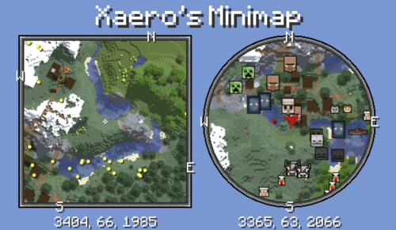

Xaero's Minimap
Мод додасть у гру приємну міні-карту, на якій жовтими точками будуть показані моби, білими – гравці, а червоними предметами.
Встановлення:
1. Завантажити мод
2. Встановити Forge (Якщо не встановлений)
3. Розпакувати мод в папку mods
Приклад: C:/Users/(ваш профіль)/AppData/Roaming/.minecraft/mods
(Шлях може відрізнятися в залежності від того, який лаунчер у вас)
4. Готово! Можна грати!